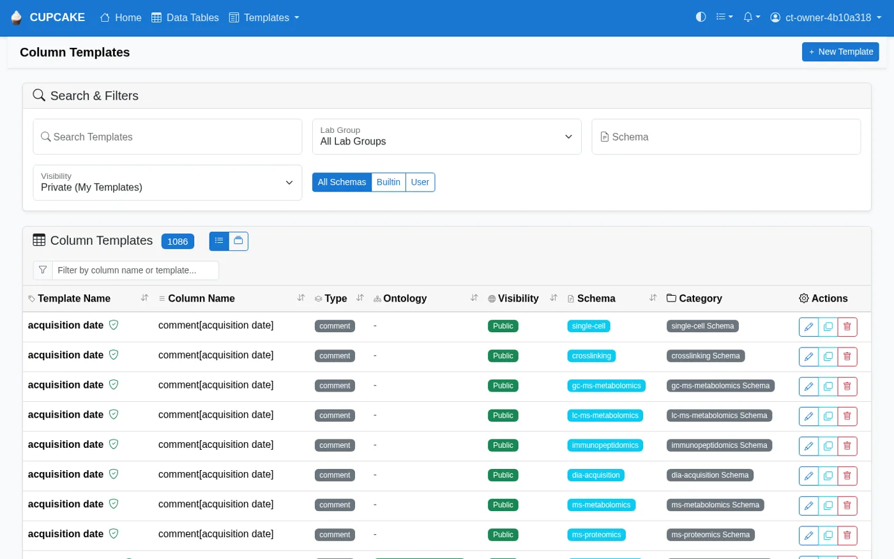
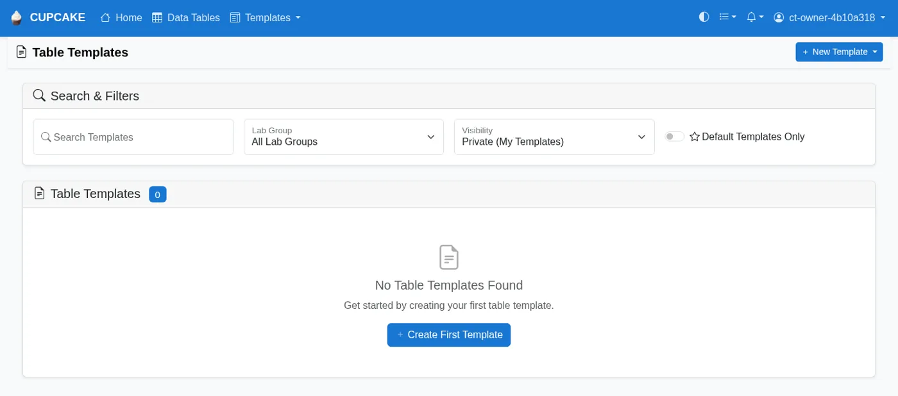

Column templates
A column template defines a column: its SDRF column name, such as characteristics[organism], its type, its ontology
for suggestions, a default value, and who can use it (only you, a lab group, or everyone). Built-in templates come
from the SDRF schemas; you can add your own.

Column Templates searches templates by name, schema, lab group and visibility. The grouped view gathers the templates of the same column name. New Template creates one; each template's actions edit, duplicate or delete it.
Table templates
A table template is a set of columns to start tables from.

- Create from Schemas builds a template from SDRF schemas: a technology schema as the base, with sample or organism and experiment schemas added as needed.
- Manual Configuration starts an empty template that you add columns to.
A template can belong to a lab group, and can be the default template for new tables. Its actions create a table from it, edit, duplicate or delete it, reorder its columns by schema, and add the columns its schemas have gained since.
To create a table from a template, choose Create metadata table from this template, then enter the table's name and number of samples.